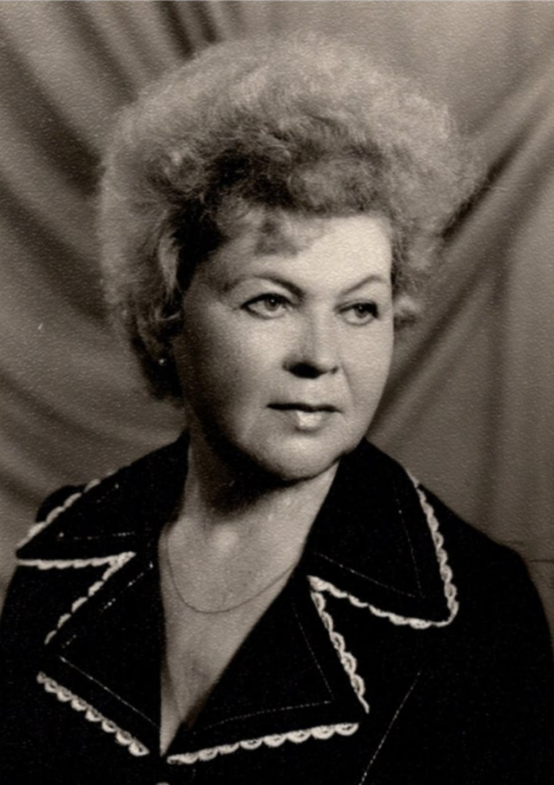

ПЫШНЕНКО ЗОЯ МАКСИМОВНА

Пышненко Зоя Максимовна. Ветеран труда
Зоя Максимовна окончила Чкаловское педагогическое училище им. В.В. Куйбышева в 1945 г. Свою педагогическую деятельность начала в СШ №132, после работала в СШ №15 и СШ №62 г. Минска. Является учителем истории высшей категории и имеет звание учителя-методиста по результатам аттестации учителей общеобразовательных школ г. Минска.. Награждена почётными грамотами Министерства образования БССР и Минского Обкома Комсомола за достигнутые успехи в деле обучения и коммунистического воспитания учащихся в 1966 г.
Имеет награды, среди которых:
— Медаль "Ветеран труда"
— Медаль "За доблестный труд в Великой Отечественной войне 1941-1945 гг."
— Юбилейная медаль "40 лет Победы в Великой Отечественной войне 1941-1945 гг."
— Нагрудный знак "Отличник народного образования БССР"